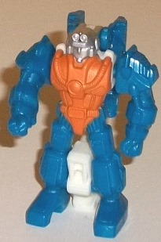
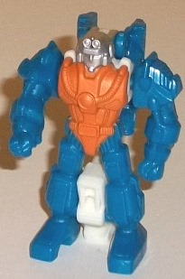
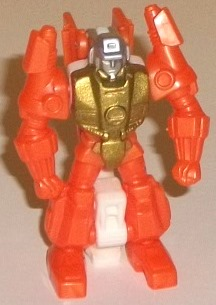
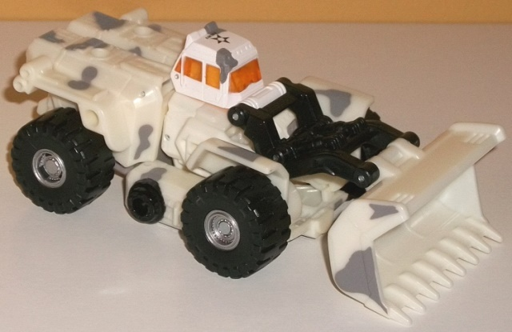
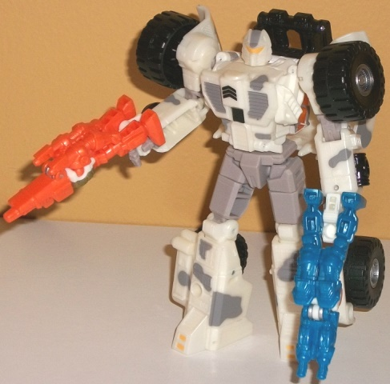

Allegiance : Diaclone
Difficulty of Transformation : Very Easy
Color Scheme : Moderately dark blue and some light orange, silver, and white
Individual Rating : 5.8
 Sergeant
Hound w/ Dia & Cline (BotCon 2015 Attendee-Only Exclusive)
Sergeant
Hound w/ Dia & Cline (BotCon 2015 Attendee-Only Exclusive)
(NOTE: Because this set is a repaint, this
is not a full-blown review. This mainly covers any changes made to the
set and the color schemes, and merely compares it to Generations Scoop
w/ Caliburst & Holepunch. For a review on the molds themselves, read
the review of Generations Scoop w/ Caliburst & Holepunch
here
.)
 Cline
Cline

Allegiance
: Diaclone
Difficulty of Transformation
: Very
Easy
Color Scheme
: Moderately dark blue
and some light orange, silver, and white
Individual Rating
: 5.8
Cline is the pilot for
Lift-Ticket
,
though they aren't packaged together since this mold is (apprarently? At
the time of production?) gang-molded with the Generations Scoop mold. (Cline
can't actually "pilot" the Lift-Ticket mold, however-- the toys weren't
designed for that.) Cline is a redeco of Holepunch, and looks a LOT like
the latter. His main color is blue, though it's a little bit lighter on
Cline than on Holepunch-- and the blue is used in the same places on both,
as well. Orange is also the main secondary color, though it's used on just
one large paint app on the main body compared to Holepunch, where it's
used on some plastic and painted on a few different places. The main color
differences here are the white plastic used for the handle for gun mode
and the upper back of the robot mode, as well as the silver-painted head.
The white contrasts excellently against the blue, though I'm not a fan
of the silver used on the head-- since this is supposed to be a guy in
a suit, painting the face silver in addition to the helmet just doesn't
really make sense and honestly looks kind of bad.
No mold changes have
been made to Cline.
 Dia
Dia

Allegiance
: Diaclone
Difficulty of Transformation
: Very
Easy
Color Scheme
: Light orange and some
white, silver, and metallic gold
Individual Rating
: 5.6
Dia is the pilot for
Burn
Out
, and is apparently female, though darned if you can tell from the
mold itself-- then again of course, this is her exo-suit, so that makes
a bit more sense. (Again, Dia can't actually pilot Burn Out.) Speaking
of which, since both are allied to Diaclone, you see the really obvious
pun with their names here? Dia and Cline? Har har. Anyways, Dia is a redeco
of Caliburst, and definitely takes some color simliarities, though she's
not as similar to the original as Cline is. Caliburst is mostly yellow
with orange accents, whereas Dia makes orange her main color-- and it's
a pretty nice shade of orange plastic, as well, quite pleasing to the eye.
The white-- used on her weapon handle and upper back, just as with Cline--
once again contrasts excellently with the main color. The chest is painted
a solid metallic gold, which is a pretty nice color, but I wish was applied
with a bit more concern for detail, like Caliburst's various blue and orange
paint apps were. She has the same silver-painted head as Cline, which--
again-- I don't like since at least her face should be flesh-colored or
something, given that she's wearing armor.
No mold changes have
been made to Dia.
Sergeant
Hound


Allegiance
: Autobot (Generation
2)
Difficulty of Transformation
: Easy
Color Scheme
: Black, off-white,
and some gray, moderately light flat gray, silver, yellowish orange, white,
and transparent light orange
Individual Rating
: 8.9
Sergeant Hound is an
homage to a toy that was planned to be released at the end of the Generation
2 line, but was cancelled for various reasons. It made it to "painted sample"
phase, though, so we got a good look at the toy that COULD have come out
via a '95 Sears catalog. This "modern" version of Sergeant Hound is pretty
darned close to the original toy, all things considered. They're both similiar
bulldozers, with similiar arm proportions. Sergeant Hound's color scheme
is pretty basic, and honestly a bit bizarre-- he has a main color scheme
of white, black, and a good amount of camo gray paint apps splashed across
both modes. All the camo gray keeps Hound from looking too one-tone in
either mode, though the concept of a camoflauged military
bulldozer
is weird-- though of course that's on the original concept, not this homage.
For his unpaintable plastic, a flatter, slightly lighter version of the
gray is used, but it's similar enough to the gray paint apps that, essentially,
there's no difference. The white paint on the cockpit is definitely a "pure"
white compared to the more off-white color of the plastic, however, so
it sticks out a bit amongst the surrounding white in vehicle mode. There's
also a bit of silver on the wheel hubs. All this said, it's a pretty monotone
and somewhat dull color scheme, even if it's accurate to the source material.
Sgt. Hound has all the same unique designs that were on the unreleased
G2 toy, such as a star with "ARMY" on the top, "W.A.L.T." on the sides,
and a unique double-arrow symbol on his chest. Thankfully there's also
a TOUCH of color on Sgt. Hound-- the transparent plastic on his windows
is a really nice shade of light orange that contrasts excellently with
the white and is, again, faithful to the unreleased G2 toy. There's also
some orangish-yellow paint on the feet, optic visor, and even on the G2
Autobot symbol (along with the entire AUTOBOT name) inside the front of
the bulldozer scoop. This latter paint app is really hard to see against
the surrounding white-- it's just too light.
Sergeant Hound has a
new headsculpt, which is quite faithful to his unreleased toy, and gets
the major details right like the visor, the rounded head, and the gas mask-like
face. That said, a few of the details look-- for lack of a better term--
a bit "mushy". It's not FunPub's best headsculpt, though it's far from
their worst, either.
Sergeant Hound-- though
not as good as the original Scoop version of his mold color-wise-- is a
very much appreciated toy for this fan, having a modern, articulated toy
finally made of an almost-released G2 toy that never "made it", and getting
a new headsculpt to boot. Dia and Cline are, unfortunately, pretty forgettable
and a bit too similar to their molds' original paint jobs-- Cline in particular.
My recommendation of this set depends entirely upon whether an unreleased
G2 toy means anything to you.
Reviews by Beastbot